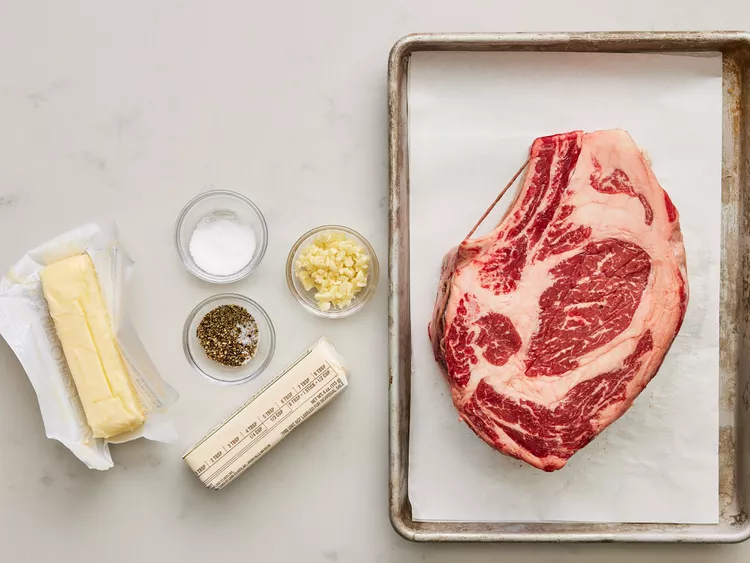
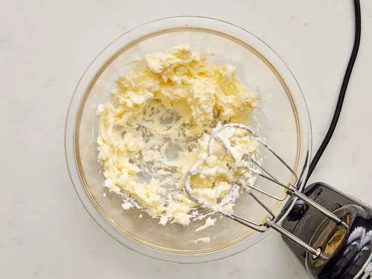
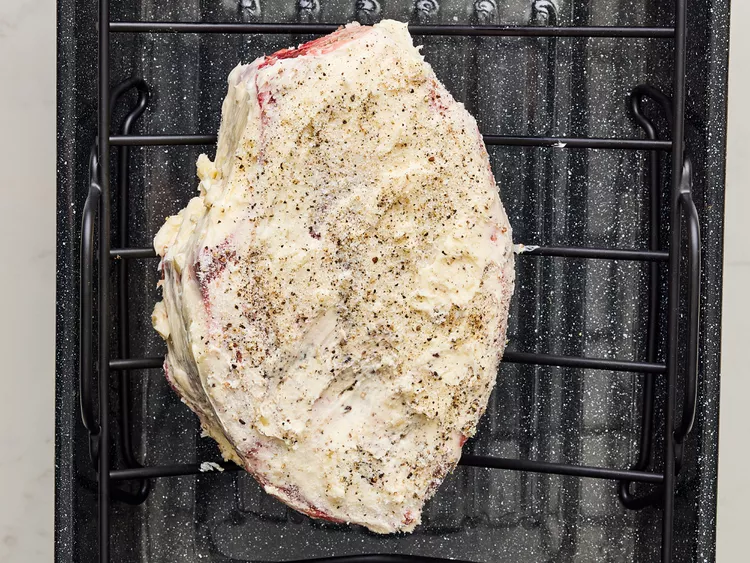
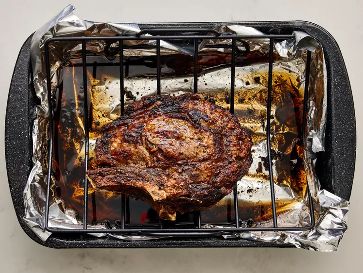
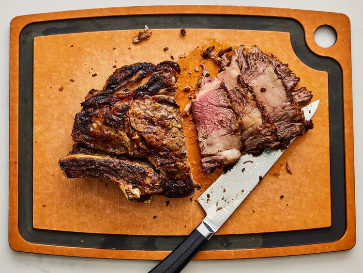

I make this rib-eye roast on the bone every time rib eyes are on sale. Easy and delicious; there are never any leftovers! We usually cook ours medium-rare.
Step 1
Gather all the ingredients and preheat the oven to 500 degrees F (260 degrees C).
Step 2
Beat butter and garlic together in a bowl
Step 3
Poke several holes in rib eye with a sharp knife. Rub butter mixture all over meat and season with salt and pepper. Place rib eye fat-side up in a roasting pan.
Step 4
Roast in the preheated oven for 20 minutes.
Step 5
Reduce heat to 325 degrees F (165 degrees C) and continue cooking until rib eye is reddish-pink and juicy in the center, 1 1/2 to 2 hours. An instant-read
thermometer inserted into the center will read 145 degrees F (63 degrees C) for medium.
Step 6
Serve and enjoy!